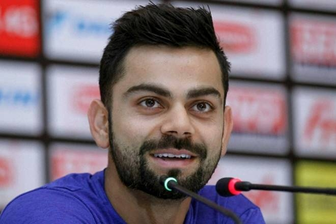
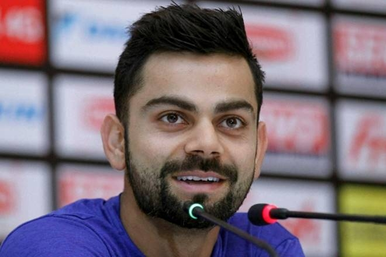

Born in Delhi, Virat Kohli shot into prominence as the Under-19 skipper, who led India to victory at the 2008 World Cup held in Malaysia. That accolade gained him instant recognition and made him an overnight teen sensation. Soon he made his ODI debut for India in Sri Lanka in August 2008 when he was thrust into the opener's role as both Virender Sehwag and Sachin Tendulkar were ruled out due to injuries. He played two important knocks - 37 in the second ODI and 54 in the fourth - both of which resulted in India winning, thereby enabling them to win the series as well. After such an impressive showing,
 

Test debut vs Windies at Sabina Park, Jun 20, 2011 Last Test vs Sri Lanka at Pallekele International Cricket Stadium, Aug 12, 2017 ODI debut vs Sri Lanka at Rangiri Dambulla International Stadium, Aug 18, 2008 Last ODI vs New Zealand at Green Park, Oct 29, 2017 T20 debut vs Zimbabwe at Harare Sports Club, Jun 12, 2010 Last T20 vs New Zealand at Greenfield International Stadium, Nov 07, 2017 IPL debut vs Kolkata Knight Riders at M.Chinnaswamy Stadium, Apr 18, 2008 Last IPL vs Delhi Daredevils at Feroz Shah Kotla, May 14, 2017